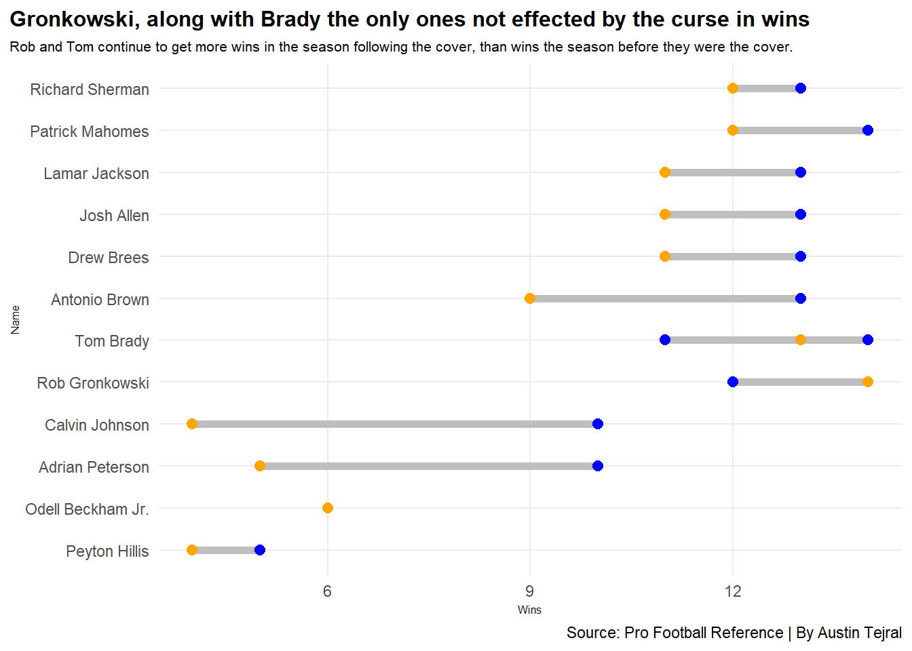

Most football fans at some point in time have probably played the football game made by EA sports that they put out each and every year, Madden. Madden has been a fan favorite for a while but this comes with some speculation, early in the games history seemingly every player featured on the cover either was injured or regressed statistically.
Such as Michael Vick who was named cover of Madden ’05 and was forced to sit out most of the season. Is this still something that happens with modern game releases or has the curse run its course? One way you could look at this is by looking at the stats of the players before and after the game release.
Lets take a look.
Code
library(tidyverse)library(ggplot2)library(gt)library(patchwork)library(ggrepel)library(ggalt)library(ggtext)qbs <-read_csv("MaddenQBSportsData.csv")rbs <-read_csv("MaddenRBSportsData.csv")rec <-read_csv("MaddenWRTESportsData.csv")def <-read_csv("MaddenDBSportsData.csv")cas <-read_csv("CoverAthleteStats.csv")castable <- cas |>select(Name, Pos, YdsBC, YdsAC, YPGBC, YPGAC)castable |>gt() |>cols_label(Pos ="Position",YdsBC ="Season Yards Before Becoming Cover Athlete",YdsAC ="Season Yards After Becoming Cover Athlete",YPGBC ="Yards Per Game Before Cover Athlete",YPGAC ="Yards Per Game After Cover Athlete" ) |>tab_header(title ="Brady improves following his cover announcements",subtitle ="Tom saw production increases both times he was the face of madden, even leading the league in passing yards in 2021." ) |>tab_style(style =cell_text(color ="black", weight ="bold", align ="left", size=22),locations =cells_title("title") )|>tab_style(style =cell_text(color ="black", align ="left", size=16),locations =cells_title("subtitle") ) |>tab_source_note(source_note =md("**By:** Austin Tejral | **Source:** Pro Football Reference") ) |>tab_style(locations =cells_column_labels(columns =everything()),style =list(cell_borders(sides ="bottom", weight =px(2)),cell_text(weight ="bold", size=12) ) ) |>opt_table_lines("none") |>opt_row_striping() |>tab_style(style =list(cell_fill(color ="#002145"),cell_text(color ="#C8032B") ),locations =cells_body(rows = YdsBC =="3554" ) ) |>tab_style(style =list(cell_fill(color ="#D50A0A"),cell_text(color ="#B1BABF") ),locations =cells_body(rows = YdsBC =="4633" ) )
Brady improves following his cover announcements
Tom saw production increases both times he was the face of madden, even leading the league in passing yards in 2021.
Name
Position
Season Yards Before Becoming Cover Athlete
Season Yards After Becoming Cover Athlete
Yards Per Game Before Cover Athlete
Yards Per Game After Cover Athlete
Drew Brees
QB
4388
4620
292.5
288.8
Peyton Hillis
RB
1177
587
73.6
58.7
Calvin Johnson
WR
1681
1964
105.1
122.8
Adrian Peterson
RB
2037
1266
131.1
90.4
Richard Sherman
DB
48
57
8.0
4.0
Odell Beckham Jr.
WR
1305
1450
108.8
96.7
Rob Gronkowski
TE
1176
540
78.4
67.5
Tom Brady
QB
3554
4577
296.2
286.1
Antonio Brown
WR
1533
1297
109.5
86.5
Patrick Mahomes
QB
5097
4031
318.6
287.9
Lamar Jackson
QB
3127
2757
208.5
183.8
Patrick Mahomes
QB
4740
4839
316.0
284.6
Tom Brady
QB
4633
5316
289.6
312.7
Josh Allen
QB
4283
4306
267.7
253.3
By: Austin Tejral | Source: Pro Football Reference
From this table we can see that largely from a statistical standpoint there really isn’t much of a change except for a couple of players. Most notably a large regressions from Peyton Hillis, and Rob Gronkowski.
Interestingly enough Tom Brady actually improves from one season to the next. This doesn’t tell the whole story though what if it was just a down year for that position could be plausiable.
Let’s take a look at how they do compared to the league.
Huh, that’s weird they for a large part are still at the top of their position groups and very good players still. Most of the players who grace the cover stay in the upper echelon of players in the NFL period, 0-2 that the curse exists, but maybe it just effects the overall team so let’s take a look at the wins.
Code
ggplot() +geom_dumbbell(data=cas,aes(y=reorder(Name, YearOneWins), x=YearOneWins, xend=YearTwoWins),size =2,colour ="grey",colour_x ="blue",colour_xend ="orange" ) +labs(x="Wins",y="Name",title ="Gronkowski, along with Brady the only ones not effected by the curse in wins",subtitle ="Rob and Tom continue to get more wins in the season following the cover, than wins the season before they were the cover.",caption ="Source: Pro Football Reference | By Austin Tejral" ) +theme(plot.title =element_text(size =12, face ="bold"),axis.title =element_text(size =6), plot.subtitle =element_text(size=8), panel.grid.minor =element_blank(),plot.title.position ="plot" )

Well there it is, each cover athlete, with the exception of Brady and Gronk, lost more the following season after they were on the cover. It isn’t even a wash of games either with each player it usually sits around 2 games which in tight playoff races makes a difference. So for the question of whether or not the curse still exists it remains plausible, but largely it seems to have taken a break from the NFL. It has failed to adapt to the 2010s decade and players can for the most part rest easy knowing the curse doesn’t have them in their sights anymore, now the team as a whole maybe watch your back.